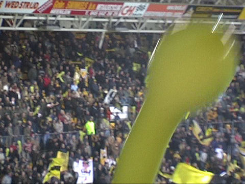

|
Roda JC - FC Utrecht (0-0) 9 maart 2007
( |
Aevitae sponsorde 15.000 jetballoons.

De sfeeractie ging de mist in door een te vroeg aftellende stadionspeaker.
Al vroeg in de wedstrijd gebeurt er iets opmerkelijks; Luinge trekt rood voor
Boussabon die een overtreding van Lachambre beantwoordde.
Boussabon moet door zijn medespelers gekalmeerd worden.
De 100 meegereisde Utrechtsupporters wenden dit akkefietje aan om
hun
ongenoegen kenbaar te maken dat zij geen ballon hebben gekregen.
In plaats van een walk-over ontspint zich een ongenadig saai duel waarin Utrecht
zowaar een enkele keer mag testen of Kujovic nog fit is, (vaste doelman Castro
was afwezig vanwege griep).
Roda buit de overtal-situatie niet uit. Hier komt Utrecht echter met de schrik
vrij.
Afwachten maar...
Luinge trok vanavond negen kaarten waarvan drie voor Roda.
Het sfeercomité van westdownsouth houdt de sfeer erin!
Als Luinge deze zeer zwakke wedstrijd affluit juicht een Utrechtspeler met het
behaalde punt.
Ook blijdschap bij de utrechtse supporters.
Enkele Kickoff diehards.
Van de spelers kwamen Leemans, Meeuwis, Agustien en Kujovic.
Kujovic voor het eerst sinds maanden weer in de basis en meteen in de Kickoff.
© Koempels Pleasure Dome
|